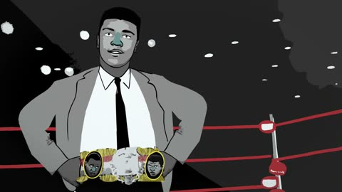

Biography · Sport
Muhammad Ali
An animated short from HISTORY about the life and boxing career of Muhammad Ali.
Video stories
Short video stories about turning points, family, work and belonging. Each story page has the video, an audio version where one exists, and transcript and caption information.
5 stories

Biography · Sport
An animated short from HISTORY about the life and boxing career of Muhammad Ali.
Biography · Sport
A Biography mini-bio of Jesse Owens: his records at Ohio State, his four gold medals at the 1936 Berlin Olympics, and the discrimination he still faced at home.
Music
A black-and-white music video of a band writing, rehearsing and playing together, with some lyrics shown on screen.
Reconciliation
BBC News Africa meets Anne-Marie, who lost four children and her husband in the Rwandan genocide, and Celestin, the man who has admitted killing her children. A priest helped her to forgive him.
Conversation · Generations
From FACTS: a young boy and an older man sit facing each other, ask each other questions about life and give each other advice.